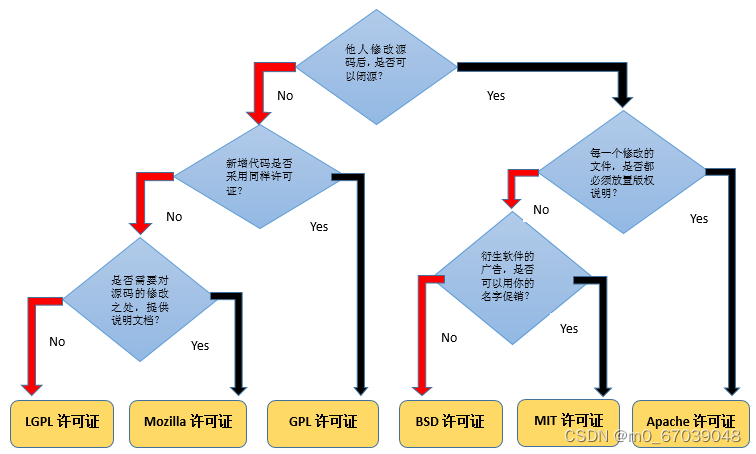
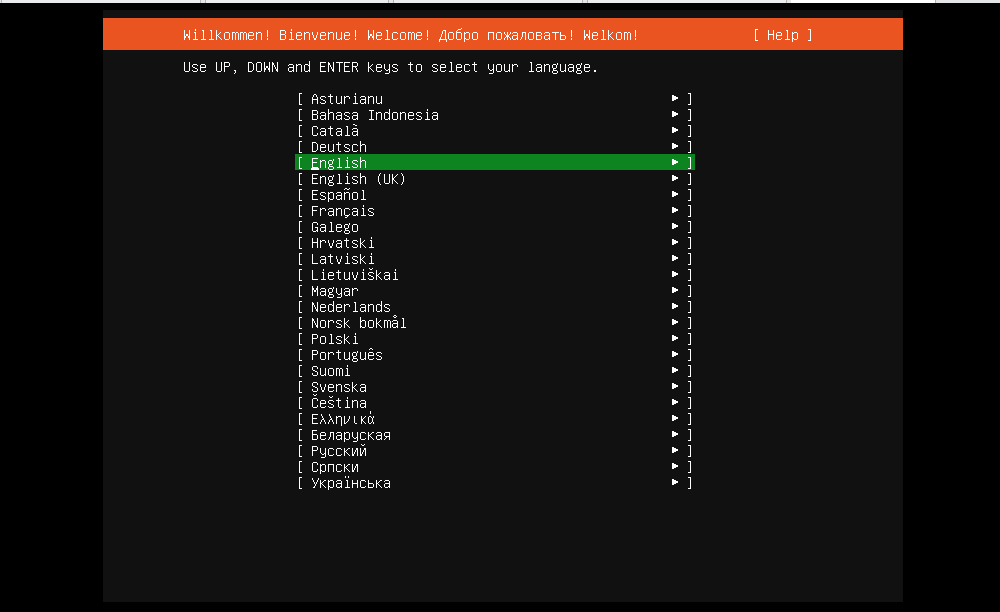

第一周作业
1.图文并茂解释开源许可证 GPL、BSD、MIT、Mozilla、Apache和LGPL的区别？

这些开源许可证主要有以下几个方面的区别：
- 是否允许闭源的后续开发：这是指是否允许使用开源代码的人将修改后的代码作为专有软件发布和销售，而不需要公开源代码。在这方面，GPL和LGPL是最严格的，它们要求任何使用或修改了GPL或LGPL代码的软件都必须采用相同的协议，并公开源代码。BSD、MIT、Mozilla和Apache则比较宽松，它们允许闭源的后续开发，只要保留原来代码中的版权声明和许可声明即可。
- 是否保留原作者的署名：这是指是否要求使用开源代码的人在自己的产品中注明原作者的姓名或机构名称。在这方面，GPL、LGPL、Mozilla和Apache都要求保留原作者的署名，而BSD和MIT则不强制要求，只要保留版权声明和许可声明即可。
- 是否重视专利权：这是指是否要求使用开源代码的人在自己的产品中遵守原作者的专利声明，或者授予原作者对自己产品中使用了开源代码部分的专利权。在这方面，Apache是最重视专利权的，它要求使用者遵守原作者的专利声明，并授予原作者对自己产品中使用了Apache代码部分的专利权。GPL、LGPL和Mozilla也有一定程度的关注专利权，它们要求使用者在自己产品中包含原作者的专利声明，并且不得对使用了GPL、LGPL或Mozilla代码部分的产品提出专利诉讼。BSD和MIT则对专利权没有特别的规定。
2. 安装各发行版系统的安装(centos, rockylinux, ubuntu, 等) 【任选1个】
ubantu20.04.6 安装
1.https://releases.ubuntu.com/20.04/ 下载链接，选择服务器版下载。
2.在VM上新建虚拟机选择典型。
3.选择稍后安装，下一步
4.选择Ubantu64位，下一步。
5.设置虚拟机名称，虚拟机文件存放位置。

6.调整磁盘大小，选择将虚拟磁盘存储为单个文件
7.调整合适的使用内存和CPU,选择下载完成的安装镜像
9.选择语言英文

10
11.修改地址阿里云
12.设置用户名密码
14,安装OPENSSH
15.选择需要安装的软件
16.选择不更新直接重启
17.安装完成
3.Linux中总结，1）如何通过一个简短的关键字 ，例如process 获取相关的命令。2）通过命令的描述，选择一个命令，获取命令的man文档。 3）解读man文档，man分几个部分？man每个部分的解释，特别是语法部分。<>, [] …等各代表什么含义。4）根据语法部分 简要的写几个操作。
1）如何通过一个简短的关键字 ，例如process 获取相关的命令。
要获取与 “process” 相关的命令，可以运行 man -k process命令。
2）通过命令的描述，选择一个命令，获取命令的man文档
要获取命令的 man 文档，可以使用 man top命令。
3）man 文档分为几个不同的部分（section），每个部分包含不同的内容。这些部分是：
- Section 1：用户命令和可执行程序的文档（例如，ls、cp、gcc）。
- Section 2：系统调用和内核函数的文档。
- Section 3：库函数的文档（例如，stdio、malloc）。
- Section 4：特殊文件（例如，设备文件、文件系统）的文档。
- Section 5：文件和文件格式的文档（例如，passwd、fstab）。
- Section 6：游戏和演示程序的文档。
- Section 7：一般性杂项文档（例如，约定、文件格式）。
- Section 8：管理命令和系统管理的文档（例如，mount、ifconfig）。
<file>：尖括号内的内容表示必选项，需要用户提供具体的参数。例如<file>可以表示文件名或文件路径。[option]：方括号内的内容表示可选项，表示用户可以根据需求选择是否使用该选项。例如[option]可以表示命令的某种功能或设置。[...]：方括号内的省略号表示可以重复的内容。例如[file ...]表示可以接受多个文件作为参数。-flag或--flag：破折号加上标志或选项表示单字符选项或长选项。例如-l表示使用 “l” 选项，--help表示使用 “help” 选项。|：竖线表示多个选项之间的互斥关系，用户只能选择其中一个选项。例如command -a | -b表示用户只能同时选择 “-a” 或 “-b” 选项。
4）以下是几个基本操作的简要说明（以常见的 ls 命令为例）：
ls：显示当前目录中的文件和子目录。ls -l：以列表形式显示文件和子目录的详细信息，包括文件类型、权限、所有者等。ls -a：显示所有文件和子目录，包括以.开头的隐藏文件。ls -t：按照修改时间的顺序显示文件和子目录。ls -R：递归地显示当前目录及其子目录中的文件和子目录。
4.切换到/etc/目录，列出fstab文件的详细信息，详细解决fstab一行，每个或每几个字符的详细含义。
- 要切换到
/etc/目录，可以使用cd命令。输入以下命令进行切换：
1 | |
- 要列出
fstab文件的详细信息，可以使用ls命令，并使用-l选项来显示详细信息。输入以下命令进行查看：
1 | |
5.简要说明FHS结构。
- FHS（文件系统层次结构）是一个 Linux 文件系统标准，它确定了文件和目录的放置位置，以便不同的发行版都可以遵循相同的结构。它定义了以下几个关键目录：
/：根目录，包含所有其他目录和文件。/bin：可执行命令文件。/boot：启动和引导文件。/etc：系统配置文件。/home：用户的主目录。/lib：共享库文件。/opt：可选安装的应用程序。/tmp：临时文件。/usr：用户程序和共享文件。/var：可变的文件，如日志和数据库。
6.用自己的理解总结 文件管理，用户管理，组用户，权限管理相关的命令。
文件管理相关命令
touch：创建文件。例如;使用touch example.txt创建一个名为example.txt的空文件rm：删除文件。例如；使用rm example.txt删除名为example.txt的文件。rmdir：删除目录。例如；使用rmdir directory删除名为directory的空目录。cat：显示文件的内容。例如；使用cat file.txt显示file.txt文件的内容。head：显示文件开头的几行。例如；使用head -n 5 file.txt显示file.txt文件的前5行内容。less：逐页查看文件内容。例如；使用less file.txt逐页查看file.txt文件的内容。more：逐屏查看文件内容。例如；使用more file.txt逐屏查看file.txt文件的内容。
用户及组管理相关的命令：
useradd：创建新用户。例如；使用useradd john创建一个名为john的新用户。userdel：删除用户。例如；使用userdel john删除名为john的用户。usermod：修改用户属性。例如；使用usermod -G group1 john将用户john添加到group1组。groupadd：创建新组。例如；使用groupadd group1创建一个名为group1的新组。groupdel：删除组。例如；使用groupdel group1删除名为group1的组。groupmod：修改组属性。例如；使用groupmod -n new_group group1将group1组重命名为new_group。chsh：修改用户默认 shell。例如；使用chsh -s /bin/bash john将用户john的默认shell更改为bash。
权限管理相关的命令：
chmod：修改文件或目录的权限。例如；使用chmod +x script.sh将脚本script.sh添加可执行权限chown：修改文件或目录的所有者。例如；使用chown john file.txt将文件file.txt的所有者更改为john。setfacl：设置文件或目录的访问控制列表。例如；使用setfacl -m u:john:rw file.txt将用户john赋予文件file.txt的读写权限。
本博客所有文章除特别声明外，均采用 CC BY-SA 4.0 协议 ，转载请注明出处！